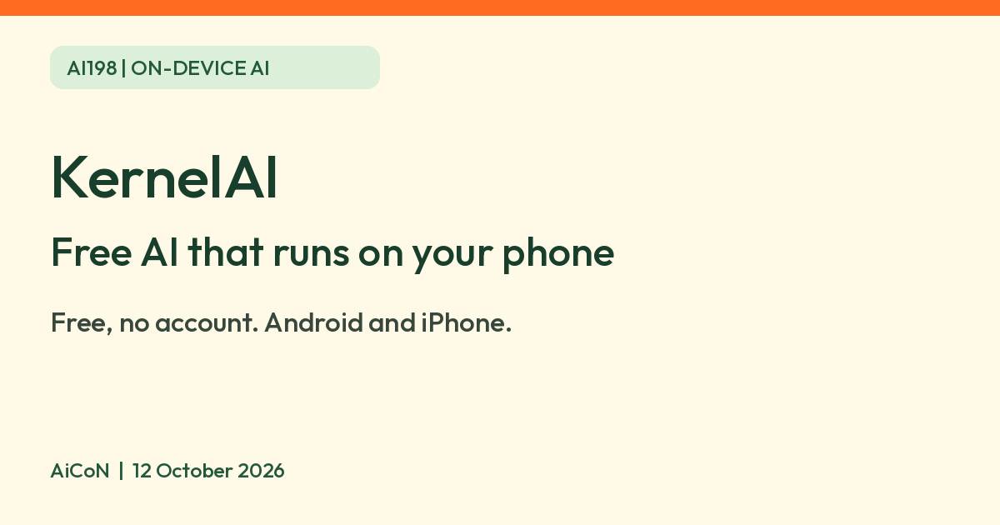

KernelAI: free offline AI on your phone, no account, 53 downloadable models
KernelAI is advertised as running open-weight AI models on your phone, with chats kept on the device. Its developer says current features are free, with no account or usage caps. India availability is not confirmed.

What it is
KernelAI is a phone app that downloads open AI models and runs them on the phone, so, according to the developer, ordinary chat, photo and document requests run locally rather than on its servers. Its website lists 53 open models from 15 labs, from 112 MB to 3.11 GB each. Nothing comes inside the app: you pick a model and download it once.
Is it free?
Yes, per KernelAI's own pages. Its FAQ says: "Current features are free, with no subscription, no usage caps and no account. Optional tips support development and do not unlock features." The real cost is storage and data, because each model is a download, and your phone's speed and memory decide what runs well. The page says the app disables models that your phone's memory cannot fit.
Who can use it
- The website says iOS 16.4+ and Android 7.0+. The US App Store listing we read instead says iOS/iPadOS 15.1+; requirements conflict, so check the current listing for your own device and country.
- The download page sends Android users to Google Play. The Google Play listing opened during this recheck. It describes Android local chat, document and vision features. We did not verify installation in an India account or on a device, so India availability is still not confirmed. We did not install it.
- Several features are described in iPhone terms on the site, such as dictation through the iPhone's own speech recognition and Siri Shortcuts. The Play listing confirms on-device Android dictation only on Android 13+ with a compatible recognizer and installed language pack. It does not establish Siri/Shortcuts parity. Android document chat requires readable text in PDFs; scanned pages are not supported.
- Age: the privacy policy says downloading is subject to the store's age rules.
What it can do, per its pages
- Answer questions about an attached PDF, Word file or spreadsheet.
- Look at a photo of a sign, menu, chart or receipt and say what it shows.
- Work with the network off once a model is downloaded.
- Optional web search, off by default. It needs your own Tavily or Exa key, a compatible model and internet; provider fees may apply.
Privacy
The privacy policy, last updated 16 August 2026, says:
- Chats, attached files, images and transcriptions are not uploaded to KernelAI's servers. Conversations stay in the app's own storage, with no cloud sync.
- Downloading a model fetches it from Hugging Face, which can see standard connection details such as your IP address, but not your chats.
- If you turn on web search, a short search query goes straight to the provider you chose, under that provider's policy. AiCoN advice: do not put private details into a search request.
- The app sends limited technical diagnostics to Sentry, such as error type, app version and device model. The policy says prompts and attached files are not intentionally included.
- When displaying search sources, icons can load directly from source websites, exposing normal connection details such as your IP. Store downloads are also subject to Apple/Google privacy policies.
- The policy says deleting the app removes its stored data, but we did not test removal. Diagnostics have no fixed retention period stated, only as long as needed for reliability/performance work.
These are the developer's statements. We did not inspect the app. Store descriptions/data-safety labels say no data collected, and the Apple description says no telemetry. Those conflict with the current policy's Sentry diagnostics disclosure. Do not read the store copy as a verified zero-network or zero-telemetry guarantee.
How to try it
- Start with the store links on the official download page. Check whether your store offers the app for your country and device before installing. The Play listing is now readable, but India/device install eligibility was not tested.
- Pick a small model first, since 18 of the 53 are under 1 GB, and download it on Wi-Fi.
- Try a non-sensitive short question first. For a photo, pick a model tagged Vision; the site says only 5 catalog models support images. Verify important answers elsewhere.
Limits to know
- The app terms (updated 5 January 2026) grant personal, non-commercial use. Free access does not mean permission for work or commercial use. Each model also keeps its publisher's licence. The terms allow features or availability to change and provide the app/models as-is.
- Small models on a phone are weaker than big online assistants. AiCoN advice: check important facts elsewhere.
- Models are made by other organisations and each has its own licence. Open weights do not mean every model has unrestricted commercial use; check the chosen publisher's licence. Downloads can use a lot of data and storage.
- The app disables models your phone cannot run, so an older phone may only see a few.
- Not tested by AiCoN. We did not install, download a model, inspect traffic, add a search key, run a prompt or verify deletion.
Frequently asked questions
Is KernelAI free?
Its pages say current features are free, with no subscription, usage caps or account. Optional tips do not unlock features.
Does it work without internet?
The site says it works fully offline after a model is downloaded. The download itself needs a connection.
Is it on Android?
Yes, per its pages, on Android 7.0 or later through Google Play. We could not confirm India availability.
What changed since this post?
Official sources rechecked 12 October 2026. Free current features/no account remains the developer's FAQ statement, not tested by AiCoN. Google Play listing now opens; India installation remains unconfirmed. Added Android dictation/PDF limits, iOS-requirement conflict, store-versus-policy diagnostics conflict, image-model selection, source-icon network access and diagnostic-retention caveats. Android feature parity is not established.
Sources: KernelAI home, Download, Models, Privacy policy, Terms, Google Play listing, US App Store listing. Checked 12 October 2026.